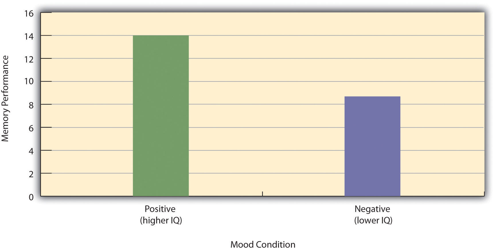

As we saw earlier in the book, an experimentA type of empirical study in which an independent variable is manipulated and a dependent variable is measured while extraneous variables are controlled. is a type of study designed specifically to answer the question of whether there is a causal relationship between two variables. Do changes in an independent variable cause changes in a dependent variable? Experiments have two fundamental features. The first is that the researchers manipulate, or systematically vary, the level of the independent variable. The different levels of the independent variable are called conditions. For example, in Darley and Latané’s experiment, the independent variable was the number of witnesses that participants believed to be present. The researchers manipulated this independent variable by telling participants that there were either one, two, or five other students involved in the discussion, thereby creating three conditions. The second fundamental feature of an experiment is that the researcher controls, or minimizes the variability in, variables other than the independent and dependent variable. These other variables are called extraneous variables. Darley and Latané tested all their participants in the same room, exposed them to the same emergency situation, and so on. They also randomly assigned their participants to conditions so that the three groups would be similar to each other to begin with. Notice that although the words manipulation and control have similar meanings in everyday language, researchers make a clear distinction between them. They manipulate the independent variable by systematically changing its levels and control other variables by holding them constant.
Recall that the fact that two variables are statistically related does not necessarily mean that one causes the other. “Correlation does not imply causation.” For example, if it were the case that people who exercise regularly are happier than people who do not exercise regularly, this would not necessarily mean that exercising increases people’s happiness. It could mean instead that greater happiness causes people to exercise (the directionality problem) or that something like better physical health causes people to exercise and be happier (the third-variable problem).
The purpose of an experiment, however, is to show that two variables are statistically related and to do so in a way that supports the conclusion that the independent variable caused any observed differences in the dependent variable. The basic logic is this: If the researcher creates two or more highly similar conditions and then manipulates the independent variable to produce just one difference between them, then any later difference between the conditions must have been caused by the independent variable. For example, because the only difference between Darley and Latané’s conditions was the number of students that participants believed to be involved in the discussion, this must have been responsible for differences in helping between the conditions.
An empirical study is said to be high in internal validityThe extent to which the design of a study supports the conclusion that differences in the independent variable caused any observed differences in the dependent variable. if the way it was conducted supports the conclusion that the independent variable caused any observed differences in the dependent variable. Thus experiments are high in internal validity because the way they are conducted—with the manipulation of the independent variable and the control of extraneous variables—provides strong support for causal conclusions.
At the same time, the way that experiments are conducted sometimes leads to a different kind of criticism. Specifically, the need to manipulate the independent variable and control extraneous variables means that experiments are often conducted under conditions that seem artificial or unlike “real life” (Stanovich, 2010).Stanovich, K. E. (2010). How to think straight about psychology (9th ed.). Boston, MA: Allyn & Bacon. In many psychology experiments, the participants are all college undergraduates and come to a classroom or laboratory to fill out a series of paper-and-pencil questionnaires or to perform a carefully designed computerized task. Consider, for example, an experiment in which researcher Barbara Fredrickson and her colleagues had college students come to a laboratory on campus and complete a math test while wearing a swimsuit (Fredrickson, Roberts, Noll, Quinn, & Twenge, 1998).Fredrickson, B. L., Roberts, T.-A., Noll, S. M., Quinn, D. M., & Twenge, J. M. (1998). The swimsuit becomes you: Sex differences in self-objectification, restrained eating, and math performance. Journal of Personality and Social Psychology, 75, 269–284. At first, this might seem silly. When will college students ever have to complete math tests in their swimsuits outside of this experiment?
The issue we are confronting is that of external validity. An empirical study is high in external validityThe extent to which the results of a study can be generalized to people and situations beyond those actually studied. if the way it was conducted supports generalizing the results to people and situations beyond those actually studied. As a general rule, studies are higher in external validity when the participants and the situation studied are similar to those that the researchers want to generalize to. Imagine, for example, that a group of researchers is interested in how shoppers in large grocery stores are affected by whether breakfast cereal is packaged in yellow or purple boxes. Their study would be high in external validity if they studied the decisions of ordinary people doing their weekly shopping in a real grocery store. If the shoppers bought much more cereal in purple boxes, the researchers would be fairly confident that this would be true for other shoppers in other stores. Their study would be relatively low in external validity, however, if they studied a sample of college students in a laboratory at a selective college who merely judged the appeal of various colors presented on a computer screen. If the students judged purple to be more appealing than yellow, the researchers would not be very confident that this is relevant to grocery shoppers’ cereal-buying decisions.
We should be careful, however, not to draw the blanket conclusion that experiments are low in external validity. One reason is that experiments need not seem artificial. Consider that Darley and Latané’s experiment provided a reasonably good simulation of a real emergency situation. Or consider field experimentsAn experiment that is conducted outside the laboratory. that are conducted entirely outside the laboratory. In one such experiment, Robert Cialdini and his colleagues studied whether hotel guests choose to reuse their towels for a second day as opposed to having them washed as a way of conserving water and energy (Cialdini, 2005).Cialdini, R. (2005, April). Don’t throw in the towel: Use social influence research. APS Observer. Retrieved from http://www.psychologicalscience.org/observer/getArticle.cfm?id=1762 These researchers manipulated the message on a card left in a large sample of hotel rooms. One version of the message emphasized showing respect for the environment, another emphasized that the hotel would donate a portion of their savings to an environmental cause, and a third emphasized that most hotel guests choose to reuse their towels. The result was that guests who received the message that most hotel guests choose to reuse their towels reused their own towels substantially more often than guests receiving either of the other two messages. Given the way they conducted their study, it seems very likely that their result would hold true for other guests in other hotels.
A second reason not to draw the blanket conclusion that experiments are low in external validity is that they are often conducted to learn about psychological processes that are likely to operate in a variety of people and situations. Let us return to the experiment by Fredrickson and colleagues. They found that the women in their study, but not the men, performed worse on the math test when they were wearing swimsuits. They argued that this was due to women’s greater tendency to objectify themselves—to think about themselves from the perspective of an outside observer—which diverts their attention away from other tasks. They argued, furthermore, that this process of self-objectification and its effect on attention is likely to operate in a variety of women and situations—even if none of them ever finds herself taking a math test in her swimsuit.
Again, to manipulateSystematically changing the level of the independent variable across groups or situations. an independent variable means to change its level systematically so that different groups of participants are exposed to different levels of that variable, or the same group of participants is exposed to different levels at different times. For example, to see whether expressive writing affects people’s health, a researcher might instruct some participants to write about traumatic experiences and others to write about neutral experiences. The different levels of the independent variable are referred to as conditionsOne level of the independent variable in an experiment., and researchers often give the conditions short descriptive names to make it easy to talk and write about them. In this case, the conditions might be called the “traumatic condition” and the “neutral condition.”
Notice that the manipulation of an independent variable must involve the active intervention of the researcher. Comparing groups of people who differ on the independent variable before the study begins is not the same as manipulating that variable. For example, a researcher who compares the health of people who already keep a journal with the health of people who do not keep a journal has not manipulated this variable and therefore not conducted an experiment. This is important because groups that already differ in one way at the beginning of a study are likely to differ in other ways too. For example, people who choose to keep journals might also be more conscientious, more introverted, or less stressed than people who do not. Therefore, any observed difference between the two groups in terms of their health might have been caused by whether or not they keep a journal, or it might have been caused by any of the other differences between people who do and do not keep journals. Thus the active manipulation of the independent variable is crucial for eliminating the third-variable problem.
Of course, there are many situations in which the independent variable cannot be manipulated for practical or ethical reasons and therefore an experiment is not possible. For example, whether or not people have a significant early illness experience cannot be manipulated, making it impossible to do an experiment on the effect of early illness experiences on the development of hypochondriasis. This does not mean it is impossible to study the relationship between early illness experiences and hypochondriasis—only that it must be done using nonexperimental approaches. We will discuss this in detail later in the book.
In many experiments, the independent variable is a construct that can only be manipulated indirectly. For example, a researcher might try to manipulate participants’ stress levels indirectly by telling some of them that they have five minutes to prepare a short speech that they will then have to give to an audience of other participants. In such situations, researchers often include a manipulation check in their procedure. A manipulation checkA measure of a manipulated independent variable—usually done at the end of the procedure—to confirm that the independent variable was successfully manipulated. is a separate measure of the construct the researcher is trying to manipulate. For example, researchers trying to manipulate participants’ stress levels might give them a paper-and-pencil stress questionnaire or take their blood pressure—perhaps right after the manipulation or at the end of the procedure—to verify that they successfully manipulated this variable.
An extraneous variableAny variable in the context of an experiment other than the independent and dependent variables. is anything that varies in the context of a study other than the independent and dependent variables. In an experiment on the effect of expressive writing on health, for example, extraneous variables would include participant variables (individual differences) such as their writing ability, their diet, and their shoe size. They would also include situation or task variables such as the time of day when participants write, whether they write by hand or on a computer, and the weather. Extraneous variables pose a problem because many of them are likely to have some effect on the dependent variable. For example, participants’ health will be affected by many things other than whether or not they engage in expressive writing. This can make it difficult to separate the effect of the independent variable from the effects of the extraneous variables, which is why it is important to controlHolding extraneous variables constant. extraneous variables by holding them constant.
Extraneous variables make it difficult to detect the effect of the independent variable in two ways. One is by adding variability or “noise” to the data. Imagine a simple experiment on the effect of mood (happy vs. sad) on the number of happy childhood events people are able to recall. Participants are put into a negative or positive mood (by showing them a happy or sad video clip) and then asked to recall as many happy childhood events as they can. The two leftmost columns of Table 6.1 "Hypothetical Noiseless Data and Realistic Noisy Data" show what the data might look like if there were no extraneous variables and the number of happy childhood events participants recalled was affected only by their moods. Every participant in the happy mood condition recalled exactly four happy childhood events, and every participant in the sad mood condition recalled exactly three. The effect of mood here is quite obvious. In reality, however, the data would probably look more like those in the two rightmost columns of Table 6.1 "Hypothetical Noiseless Data and Realistic Noisy Data". Even in the happy mood condition, some participants would recall fewer happy memories because they have fewer to draw on, use less effective strategies, or are less motivated. And even in the sad mood condition, some participants would recall more happy childhood memories because they have more happy memories to draw on, they use more effective recall strategies, or they are more motivated. Although the mean difference between the two groups is the same as in the idealized data, this difference is much less obvious in the context of the greater variability in the data. Thus one reason researchers try to control extraneous variables is so their data look more like the idealized data in Table 6.1 "Hypothetical Noiseless Data and Realistic Noisy Data", which makes the effect of the independent variable is easier to detect (although real data never look quite that good).
Table 6.1 Hypothetical Noiseless Data and Realistic Noisy Data
| Idealized “noiseless” data | Realistic “noisy” data | ||
|---|---|---|---|
| Happy mood | Sad mood | Happy mood | Sad mood |
| 4 | 3 | 3 | 1 |
| 4 | 3 | 6 | 3 |
| 4 | 3 | 2 | 4 |
| 4 | 3 | 4 | 0 |
| 4 | 3 | 5 | 5 |
| 4 | 3 | 2 | 7 |
| 4 | 3 | 3 | 2 |
| 4 | 3 | 1 | 5 |
| 4 | 3 | 6 | 1 |
| 4 | 3 | 8 | 2 |
| M = 4 | M = 3 | M = 4 | M = 3 |
One way to control extraneous variables is to hold them constant. This can mean holding situation or task variables constant by testing all participants in the same location, giving them identical instructions, treating them in the same way, and so on. It can also mean holding participant variables constant. For example, many studies of language limit participants to right-handed people, who generally have their language areas isolated in their left cerebral hemispheres. Left-handed people are more likely to have their language areas isolated in their right cerebral hemispheres or distributed across both hemispheres, which can change the way they process language and thereby add noise to the data.
In principle, researchers can control extraneous variables by limiting participants to one very specific category of person, such as 20-year-old, straight, female, right-handed, sophomore psychology majors. The obvious downside to this approach is that it would lower the external validity of the study—in particular, the extent to which the results can be generalized beyond the people actually studied. For example, it might be unclear whether results obtained with a sample of younger straight women would apply to older gay men. In many situations, the advantages of a diverse sample outweigh the reduction in noise achieved by a homogeneous one.
The second way that extraneous variables can make it difficult to detect the effect of the independent variable is by becoming confounding variables. A confounding variableAn extraneous variable that differs across the levels of the independent variable. is an extraneous variable that differs on average across levels of the independent variable. For example, in almost all experiments, participants’ intelligence quotients (IQs) will be an extraneous variable. But as long as there are participants with lower and higher IQs at each level of the independent variable so that the average IQ is roughly equal, then this variation is probably acceptable (and may even be desirable). What would be bad, however, would be for participants at one level of the independent variable to have substantially lower IQs on average and participants at another level to have substantially higher IQs on average. In this case, IQ would be a confounding variable.
To confound means to confuse, and this is exactly what confounding variables do. Because they differ across conditions—just like the independent variable—they provide an alternative explanation for any observed difference in the dependent variable. Figure 6.1 "Hypothetical Results From a Study on the Effect of Mood on Memory" shows the results of a hypothetical study, in which participants in a positive mood condition scored higher on a memory task than participants in a negative mood condition. But if IQ is a confounding variable—with participants in the positive mood condition having higher IQs on average than participants in the negative mood condition—then it is unclear whether it was the positive moods or the higher IQs that caused participants in the first condition to score higher. One way to avoid confounding variables is by holding extraneous variables constant. For example, one could prevent IQ from becoming a confounding variable by limiting participants only to those with IQs of exactly 100. But this approach is not always desirable for reasons we have already discussed. A second and much more general approach—random assignment to conditions—will be discussed in detail shortly.
Figure 6.1 Hypothetical Results From a Study on the Effect of Mood on Memory
Because IQ also differs across conditions, it is a confounding variable.
Practice: For each of the following topics, decide whether that topic could be studied using an experimental research design and explain why or why not.